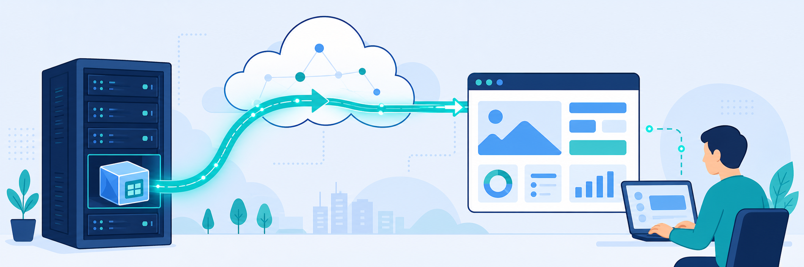

Lab 2: ZPA App Connector & Browser Access
Scenario: You are an IT Engineer tasked with provisioning third-party vendor access to an internal heating, ventilation, and air conditioning (HVAC) application. Because the vendor does not use Zscaler Client Connector, you configure Browser Access to provide secure, clientless connectivity through a web browser. To meet security and usability requirements, you implement a web server certificate and a DNS-resolvable URL. By the end of this lab, the vendor can securely access the HVAC application through Browser Access by using the application URL.
- Provision an App Connector to connect the internal HVAC application to the Zero Trust Exchange.
- Configure an application segment and access policy to define the HVAC resource and allow access for authenticated third-party users.
- Validate Browser Access by testing the end-to-end connection without Zscaler Client Connector.

In this task, you configure the App Connector by creating an App Connector Group and registering the App Connector in the Zero Trust Exchange.
- Access the Admin Portal. On the Corp Client PC 1 VM, sign in with the following credentials:
- Username:
student - Password:
Admin-123!
- Username:
- Configure the App Connector Group.
- In the Experience Center, type
App Connector Groupsin the Search menu and select the matching option (Private Access > Private Infrastructure > App Connectors). - Select + Add and enter the following values in Add App Connector Group:
- Name:
OnPrem - Status: Enabled
- Description: optional
- Signing (Enrollment) Certificate:
Connector - Other configurations: leave as default
- App Connector Location: enter your current city
Note: Choose an App Connector location that aligns with your closest geographic proximity.
Note: If the maintenance window warning appears, select I understand to proceed with the configuration.
- Name:
- Select Save.
- Verify that the App Connector Group was created.
- In the Experience Center, type
In this task, you activate the App Connector and verify secure traffic flow to ZPA.
- Configure the App Connector.
- Launch the Corp ZPA Connector VM.
- Log in to the Corp ZPA Connector VM by selecting CON in the left side panel, using the following credentials:
- Username:
admin - Password:
Zscaler1!
- Username:
- To view the token, type:
cat /etc/issue
- Use the CLI to regenerate a new authentication token by running the following commands:
- Stop the ZPA Connector service:
sudo systemctl stop zpa-connector - Switch to root user privileges:
sudo su - Delete the existing OAuth token files (you may also go to the directory to remove all the files):
rm -rf /opt/zscaler/var/* - Restart the ZPA Connector service to see the new OAuth token:
sudo systemctl start zpa-connector - View the new token:
cat /etc/issue
- Stop the ZPA Connector service:
- Update the token in the App Connector to deploy it.
- In the Experience Center landing page (Corp Client PC 1), type
App Connectorsin the Search menu and select the matching option (Private Access > Private Infrastructure > App Connectors). - Select Add, then enter:
- Group:
OnPrem(the App Connector Group created in Task 2.1) - Enrollment Tokens: add the token generated in Step 2 (for example,
RPSTV-QZLJM), then select Add
Note: If the generated token is not working or has expired, repeat Step 2 to generate a new one.
- Group:
- Confirm that the App Connector appears in the list.
Note: The App Connector Connection Health may take about 30 seconds to change from Disconnected to Connected. Continue with the next task and check the status again after a short time.
- Select the App Connector name to view its details, including Host OS, PSE, Location, IP addresses, and Uptime.
- In the Experience Center landing page (Corp Client PC 1), type
In this task, you add the HVAC application segment and an access policy to enable third-party vendor access by using Browser Access.
- Add an application segment.
- In the Experience Center home page, type
Application Segmentsin the Search menu and select the matching option (Private Access > Private Applications). - Select Add Application Segment.
- Configure the application segment settings:
- Name:
HVAC - Status: Enabled
- Applications:
<Student ID>.hvac.safemarch.com - Access Type: Browser Access
- Certificate Type: Managed
- Under External URL: Domain Prefix
hvac
- Domain Suffix: select any one of the domain suffixes from the drop-down
- Under Internal URL: Protocol
HTTP; Port80
- Name:
- Under Client Connector Access, set TCP Port Ranges to
80through80, then select Next.
- In the Experience Center home page, type
- Add the segment group and server group, then save.
- Add a segment group: Name
CorpApps; Status Enabled. - Select Next.
- Add a server group: Name
CorpServers; App Connector GroupsOnPrem. - Select Next.
- Review the configuration, then select Save.
- Add a segment group: Name
- Add the access policy rule.
- After you save, in the Add Application Segment window, select Edit Policy.
- On the Access Policy page, select Add Rule, then configure the rule:
- Rule Action: Allow Access
- Rule Name:
Allow HVAC
- Define the criteria:
- Select Applications and choose the HVAC application segment.
- Select Client Types and choose Web Browser.
- Select Add Rule.
In this task, you access the HVAC application from a remote Linux client to simulate a third-party contractor connection.
- Access the HVAC application through Browser Access.
- In the Experience Center, type
Browser Accessin the Search menu and select the matching option (Zero Trust Browser > Web Access). - Copy the External Domain of the application whose internal domain is
zs000XYZ.hvac.safemarch.com.
- In the Experience Center, type
- Sign in to the Remote Linux Client PC with these credentials:
- Username:
admin - Password:
Admin-123!
- Username:
- Verify the DNS resolution.
- Open Terminal.
- Run a DNS lookup for your application:
dig <paste the external domain you copied> - Confirm that the results resolve to Zscaler public IP addresses and include hostnames that start with
exporter.gslb.Note: If resolution fails, flush the DNS cache with
sudo systemd-resolve --flush-caches. If it prompts for a password, enterAdmin-123!, or restart the VM.
- Test application access.
- Open Chrome and go to the External Domain you copied from Browser Access.
- If you see a privacy warning, select Advanced and proceed to the site.
- Authenticate with your HVAC user credentials (see Lab Access Information):
- Username:
hvac@<Student FQDN>(for example,hvac@zs000136.labtenant.com) - Password:
Admin-123!
- Username:
- Confirm that the Safemarch HVAC Control page opens.